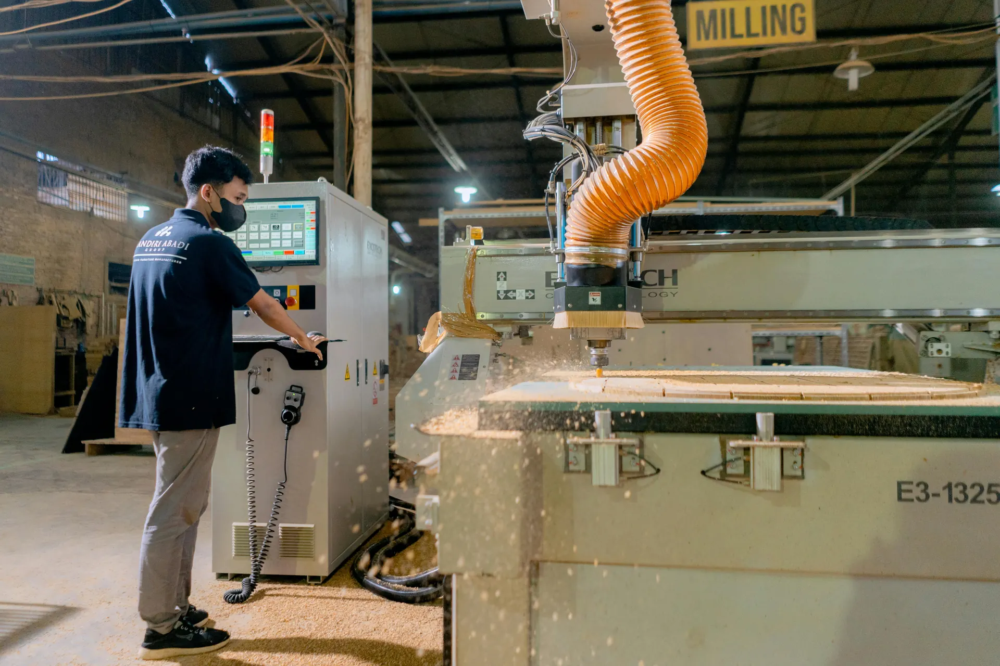

AI built around how an operations team runs.
For the people running the crews, the lines and the yard. Built on the shift reports, tickets and legacy systems you already have, so the constraint is named from your own data rather than argued about.
Real numbers from real operations.
Every figure traces to a working paper. Where a number is unproven, we say so.
Four phases, from the shift report to the decision.
Operations already generates more data than anyone reads. The problem is not measurement, it is that the measurements sit in different places and arrive too late to change anything.
Capture & Connect
Shift · maintenance · ticket · sync
The shift report is handwritten, the maintenance log lives in a folder, and the production numbers reach the office once a month if the person who types them is in. By the time any of it is usable, the shift it describes is weeks gone and nobody can act on it.
Quarri reads shift reports, maintenance logs and tickets as they are written, several times a day, so the operation is managed on this week rather than last month.
- Handwritten shift and maintenance reports read at volume
- Production tallies validated against the floor's own sheet
- ERP, MES and spreadsheet data joined on one key
- Several syncs a day, not one keying a month

Daily production tallies read off the page and validated to the dollar against the floor's own sheet.
Yield & Throughput
Recovery · downtime · constraint · rate
Everyone has an opinion about what is slowing the plant down, and the opinion usually points at whatever is loudest. Meanwhile the real constraint moves with the product being run, and the cost of stopping and starting is spread across so many jobs that nobody adds it up.
Quarri reads utilisation and downtime across every station, so the step actually capping the week is named rather than argued about.
- Recovery tracked by shift, line and supplier
- Downtime attributed to the station causing it
- Setup and changeover costed against the jobs causing them
- The real constraint named, not assumed

At one mill 78% of downtime sat on the trim line rather than the saw everybody was watching.
Inventory & Lead time
Stock · state · age · cover
Stock is usually reported as a total, which is the least useful form of it. The same item changes identity as it moves through the plant, some of it stopped selling a year ago, and the lead times used for planning came from supplier terms rather than from what suppliers actually did.
Quarri tracks every item through each state it passes through and ages it against real demand, so stock is a position you can act on rather than a total you report.
- Every item tracked through each state it passes
- Ageing and dead stock flagged before it sets
- Supplier lead times measured, not taken from terms
- Cover calculated against real open demand

Ageing stock read against demand rather than reported as a total, so what has stopped moving becomes somebody's number.
Schedule & Deliver
Schedule · route · promise · deliver
Orders get scheduled one at a time, in the order they arrive or the order somebody shouts about. They compete for the same stock and the same machines, and a date promised without checking capacity is a date somebody else has to explain later.
Quarri re-solves the whole order book against real capacity in about a second, so the schedule you run is the one that hits the most promises rather than the loudest.
- Whole order book re-solved against real capacity
- Every route to fill an order costed and timed
- On-time performance measured, not estimated
- Same-product runs sequenced into one setup
Orders sent down different paths so they stop competing for the same stock. A re-solve takes about a second against a brute-force optimum it lands within two percent of.
AI at the foundation. Not retrofitted.
Most software for this chain was built as a form. Quarri was built as a model of your operation.
- Their fields, your words mapped in
- Exceptions become change requests
- Paper is a keying job
- Every run costs a model call
- New questions join the queue
- Reports you wait to receive
- Scale by hiring around the gaps
- Your words, from day one
- Exceptions become rules you edit
- Paper read at volume, deterministically
- 100x cheaper per execution
- Questions asked in plain English
- Dashboards and scripts you build yourself
- Scale by pointing it wider
Ask it in plain English. Act on it the same day.
Because the shift report, the stock position, the order book and the ledger all sit in one governed layer, a question can cross the whole operation instead of stopping at a system boundary. That is a margin lever, not just a tidier way to operate.
- Any question across the cycle, in plain English
- Numbers computed, so the answer matches the ledger
- Dashboards and scripts your team builds and shares
- Alerts when recovery slips or a promise is at risk
Output against plan by line, from the same shift records the floor already writes.
A sawmill and remanufacturing operation
Production tallies, shift reports and maintenance notes were written on paper and keyed once a month, so the plant was managed on numbers that were already several weeks old and the bottleneck was a matter of opinion.
Quarri reads the daily tallies and shift reports as they are written and joins them to the order book. Reading downtime properly put 78% of it on the trim line rather than the saw everybody was watching, and the full remanufacturing ledger showed set-up and knife changes at 46% of mill cost against 28% for the cutting that adds the value. The order book now re-solves against real capacity in about a second. Read the case study.
Agents that order and reschedule.
Everything above works out the answer and hands it to you. The next step is letting it act. An agent that drafts the purchase order when cover runs short against the open book, and re-cuts the week when a run overruns or a late delivery changes the picture. You approve a decision instead of assembling one.
- Purchase orders drafted when cover runs short
- The week re-cut when a run overruns
- Every action proposed for approval, never taken quietly
A run overruns and the week is re-cut around it. A design sketch rather than a screenshot: not deployed today, and every action would come to you for approval.
The rest of the picture.
See it on your own data.
Live in two weeks, on the systems you already run.